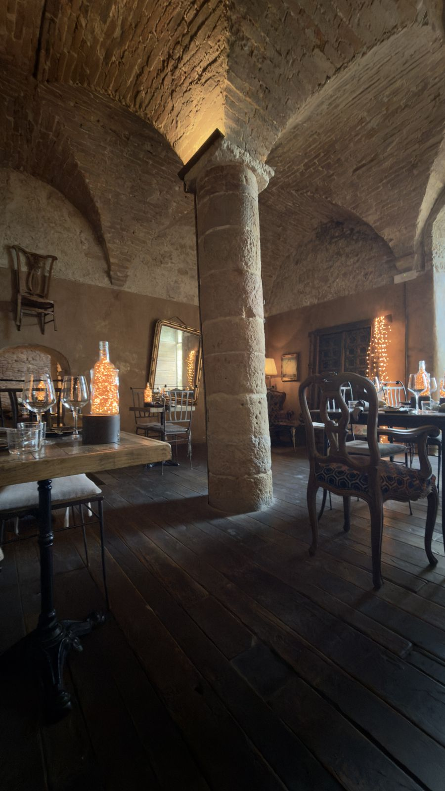
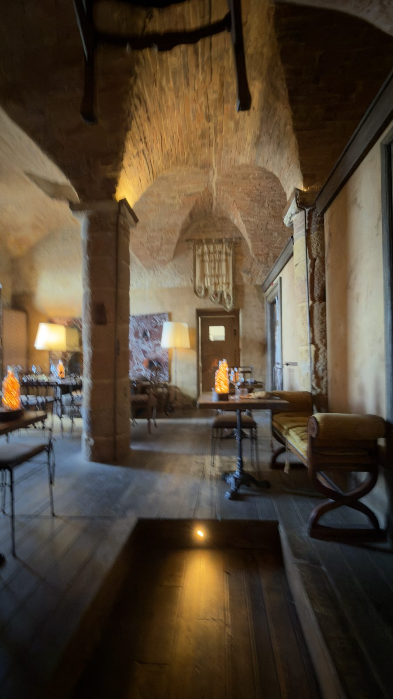
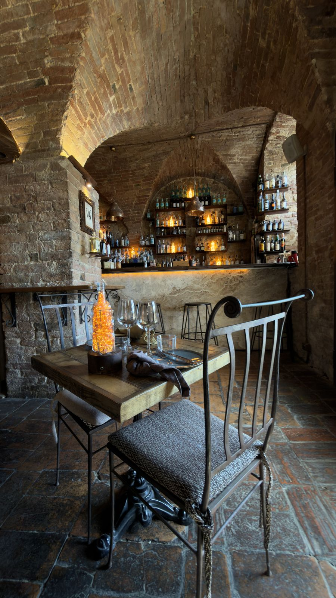
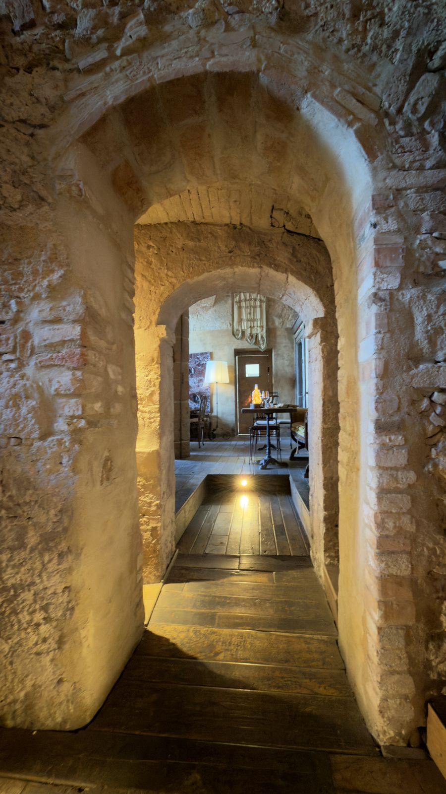
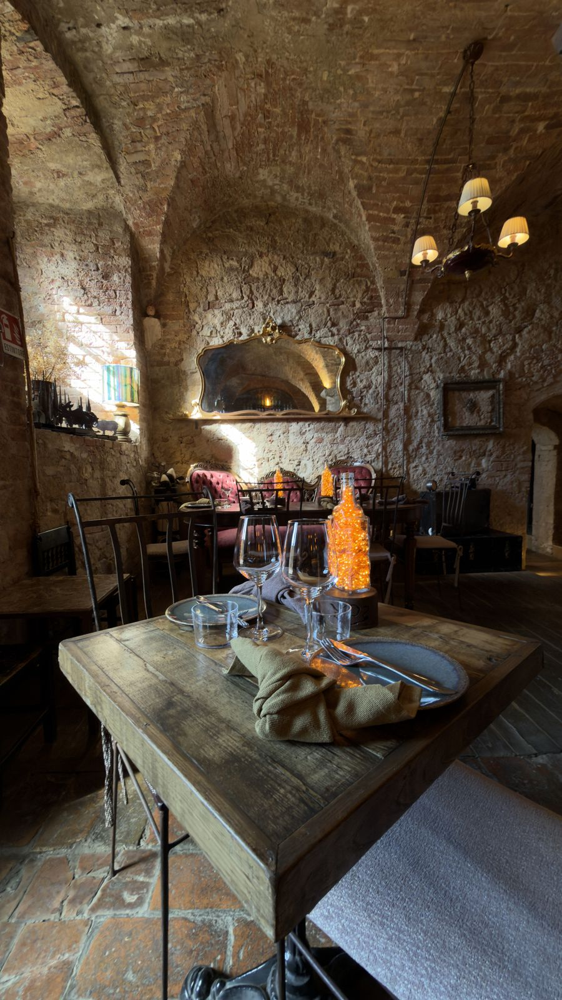
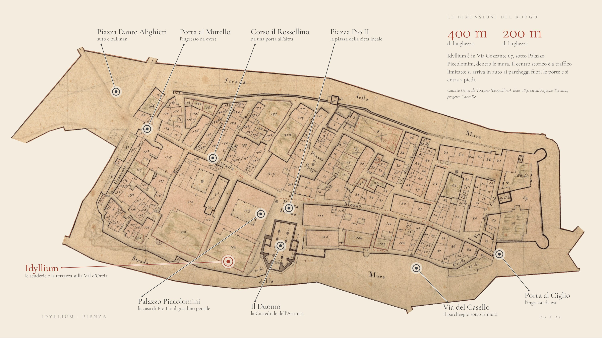
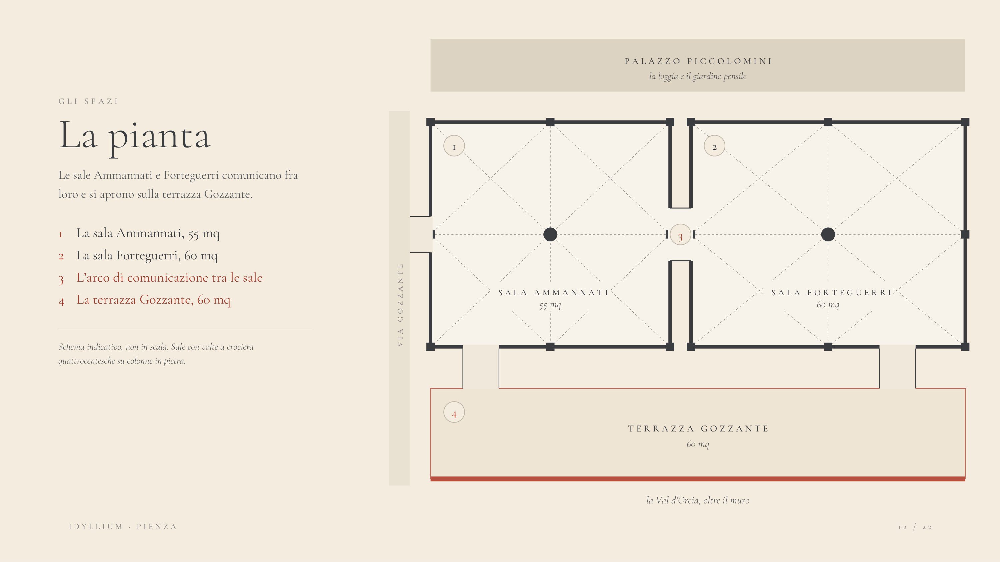

01
Il Papa della Luce
Indoor · 2h30Uno storico dell’arte racconta la vita nascosta di Papa Pio II e della sua città ideale, durante il convivio da Idyllium.
Ristorante e cocktail bar nelle scuderie quattrocentesche di Palazzo Piccolomini.
Piccola e immensa Val d’Orcia. Qui si affaccia meravigliosamente Idyllium. Nelle scuderie quattrocentesche di Palazzo Piccolomini, nel centro storico di Pienza, patrimonio UNESCO; Idyllium racconta cucina, vini e mixology che nascono dalla ricchezza del territorio.
Nel 1459 Papa Pio II rese la natia Corsignano la prima città ideale dell’Umanesimo. Le diede il proprio nome: Pienza.
Immersa nel panorama della valle, davanti un orizzonte che va da Radicofani a Montalcino.


Sono il cuore segreto di architetture concepite da Rossellino.



Materie prime della Val d’Orcia, ingredienti cercati uno a uno nelle stagioni e nel tempo che ogni piatto richiede.
Una carta ampia e profonda: i grandi rossi di Montalcino, Bolgheri, i Super Tuscan e i Montepulciano.
I Signature di Idyllium compongono i profumi delle terre e dei cieli della Val d’Orcia. I Grandi Classici sono reinterpretati con i nostri vermouth ed essenze.
Tra i primi 500 cocktail bar del mondo.

Le due sale in pietra, Ammannati e Forteguerri, comunicano fra loro e si aprono sulla terrazza Gozzante. Ogni sala si prenota da sola, le due insieme, oppure insieme alla terrazza: in esclusiva, e un solo evento al giorno.
| Spazio | Superficie | Placée | Standing |
|---|---|---|---|
| La sala Ammannati | 55 mq | 20 | 40 |
| La sala Forteguerri | 60 mq | 20 | 40 |
| Ammannati + Forteguerri | 115 mq | 40 | Su richiesta |
| Le due sale + la terrazza | 175 mq | 100 | 250 |
La terrazza non è prenotabile singolarmente, ma unitamente a una delle due sale. Volte in pietra alte fino a 6 metri.
Le sale Ammannati e Forteguerri comunicano fra loro e si aprono sulla terrazza Gozzante.
Schema indicativo, non in scala. Sale con volte a crociera quattrocentesche su colonne in pietra.

Esperienze pensate per chi cerca il tempo dell’ascolto, la profondità del territorio e il piacere delle emozioni.
Tutte le esperienze si concludono con il Convivio da Idyllium.
Uno storico dell’arte racconta la vita nascosta di Papa Pio II e della sua città ideale, durante il convivio da Idyllium.
Cocktail Masterclass con il Master Bartender.
Nel palazzo di Pio II e nelle sue scuderie.
Nella Val d’Orcia, durante tutto l’anno.
Passeggiata botanica alla scoperta delle erbe spontanee commestibili.
Tra i sentieri della Val d’Orcia con Beppe Bussu, cheese master. Verticale di pecorini affinati con Brunello di Montalcino.
Visita e tasting alla cantina Casanova di Neri a Montalcino, poi convivio a Pienza con lo Chef Perna.
Le scuderie di Palazzo Piccolomini si adattano a diverse configurazioni di ricevimento. La pietra storica delle sale e le grandi aperture sul paesaggio accolgono la messa in scena di matrimoni e cene speciali.
I tempi sono calcolati in automobile su percorso stradale.
| Destinazione | Distanza | In auto |
|---|---|---|
| Stazione di Chiusi–Chianciano Terme | 40 km | 40 min |
| Uscita A1 Chiusi–Chianciano Terme | 35 km | 35 min |
| Siena | 55 km | 1 h |
| Firenze | 120 km | 1 h 45 |
| Aeroporto di Firenze Peretola | 135 km | 1 h 50 |
| Roma | 190 km | 2 h 20 |
| Aeroporto di Roma Fiumicino | 200 km | 2 h 25 |
| Perugia | 85 km | 1 h 15 |
| Pista per elicottero | Nei dintorni | — |
| Orari e musica | Nei limiti del regolamento comunale |
| Esclusiva | La struttura è riservabile in esclusiva. |
| Se piove | Set Up nelle sale interne; sulla terrazza è disponibile un cover set, nel rispetto del contesto storico |
| Parcheggio e accesso | Il centro storico è zona a traffico limitato. È disponibile un parcheggio esclusivo con servizio di navetta. Parcheggio pubblico a 200 metri |
| Pullman | Sosta al di fuori del paese |
| Pernottamento | Disponibili strutture in zona |
| Animali | Ammessi |
| Luogo | Pienza (SI), Val d’Orcia |
| Indirizzo | Via Gozzante 67, 53026 Pienza |
| Edificio | Scuderie quattrocentesche di Palazzo Piccolomini |
| Contesto | Pienza e la Val d’Orcia, doppio patrimonio UNESCO |
| Formula | Ristorante e cocktail bar |
| Cucina | Chef Luigi Perna |
| Bar | Mixologist Mattia Pozzi, tra i primi 500 cocktail bar del mondo |
| Spazi | Due sale interne e la terrazza |
| Esperienze | Indoor e outdoor, tutto l’anno |
| Capienza massima | 100 ospiti placée, 250 standing |
| Stagionalità | Tutto l’anno, chiusi a febbraio |
| Disponibilità eventi | Un unico evento al giorno, 7 giorni su 7 |
| Pernottamento | Non disponibile in sede, collegamento con strutture in zona |
Idyllium, Via Gozzante 67, 53026 Pienza (SI).